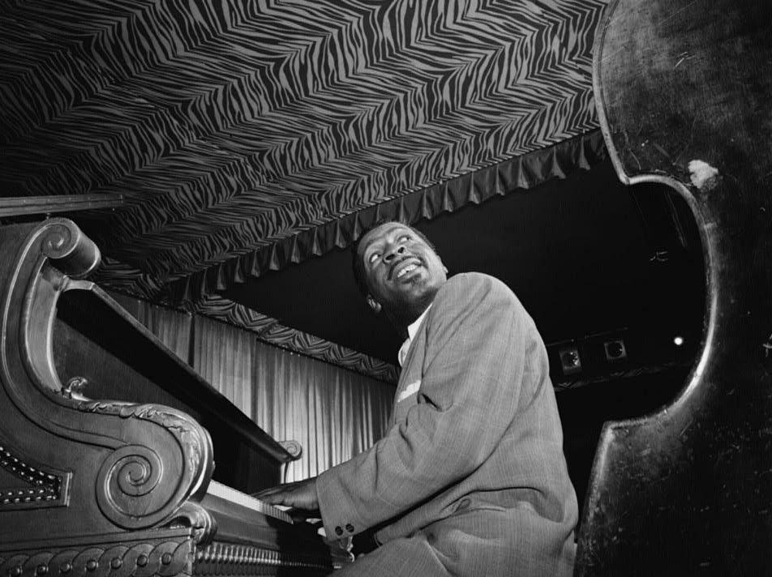
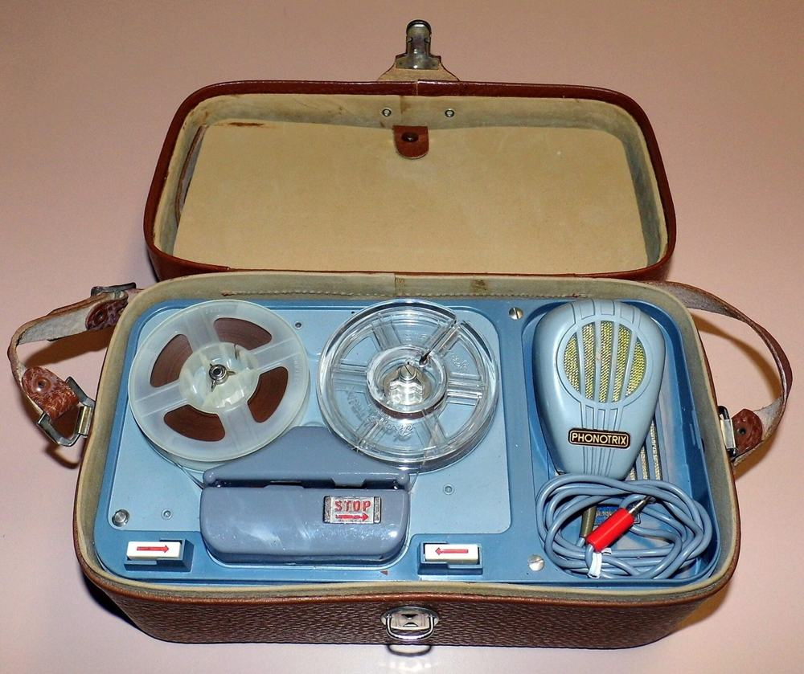

故事
寫出 Misty 的鋼琴手，一輩子不會看譜。他叫 Erroll Garner，1921 年生在匹茲堡。他三歲開始彈琴，全靠耳朵學。
他個子很矮，上台時要坐在一本厚厚的電話簿上。據說 Misty 的旋律，是他在飛機上看著窗外的彩虹想到的。他不會寫譜，靈感來了就先彈進錄音機裡。

他的左手像吉他一樣，穩穩刷著節奏。右手的旋律，卻常常故意晚一點點才進來。他的現場專輯 Concert by the Sea，是最暢銷的爵士唱片之一。收藏起來，下次聽 Misty，想想那片窗外的彩虹。
故事後面
Erroll Garner 一輩子不會讀譜，卻錄了大量唱片，還有作品被寫成樂譜出版，是別人幫他記下來的。
他的左手像節奏吉他一樣穩穩地刷，右手旋律常常故意拖一點點，這種「左右手不同步」成了他的招牌。
一九五五年的現場專輯 Concert by the Sea 賣得極好，是很多人第一張爵士唱片。

這樣聽
先聽他自己彈的版本，再聽任何一個歌手唱的版本，比比看旋律的停頓。
逐句英文
The pianist who wrote Misty never learned to read music.
His name was Erroll Garner, born in Pittsburgh in 1921.
He started playing at three, learning everything by ear.
He was short, so on stage he sat on a thick phone book.
Reportedly the melody of Misty came to him on a plane, looking at a rainbow outside.
Unable to write notation, he recorded his ideas onto tape.
His left hand strummed a steady beat like a rhythm guitar.
His right hand often came in just a little behind the beat, on purpose.
His live album Concert by the Sea is one of the best-selling jazz records.
Save this. Next time you hear Misty, think of that rainbow outside the window.
查證筆記與出處
「飛機上看彩虹」是 Garner 自己的說法（一九五四年舊金山飛芝加哥），寫據說。「彈進錄音機」為傳記常見描述，待查第二來源。
https://en.wikipedia.org/wiki/Erroll_Garner
https://en.wikipedia.org/wiki/Misty_(song)
一分鐘影片版在 Instagram @jazz101tw。